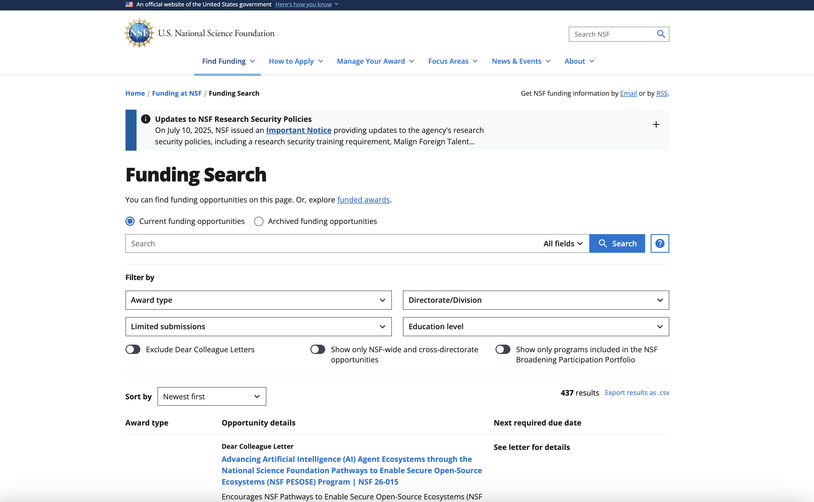
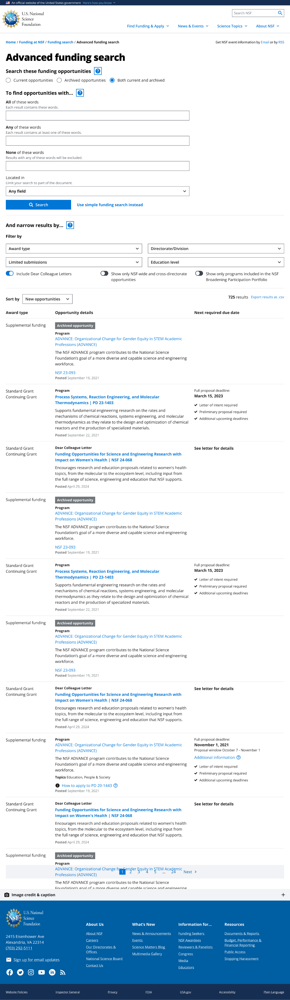

ROLE
Product Designer • End-to-end
Open to new roles
2026
CASE STUDY 03 — SEARCH EXPERIENCE
National Science Foundation Funding Search Engine
Architecting a unified search ecosystem to help researchers navigate complex government funding data with ease and precision.
nsf.gov / funding / search

The redesigned Funding Search — visible filters, scannable results, accessible by default
View on NSF.govTHE CHALLENGE
01
Confusing filters
Critical options buried inside deeply nested dropdown menus.
02
Cluttered results
Walls of unstructured text - impossible to scan or compare.
03
Disconnected search
Tools and saved searches scattered across the platform.
THE GOAL
one accessible search ecosystem where any researcher can find the right funding quickly, with confidence.
KEY FEATURE 01
PROBLEM
The Directorate/Division filter hid dozens of departments inside nested menus, you had to know exactly what you wanted before you could look.
SOLUTION
A visible, searchable filter system - type to find any option in place, see clear parent-child relationships, and reset everything in one tap.
BEFORE
AFTER
Result list — from wall of text to structured, scannable card
KEY FEATURE 02
PROBLEM
Each result was a dense paragraph - title, metadata, deadlines and eligibility all run together. Comparing opportunities was nearly impossible.
SOLUTION
A structured, responsive result card. Unstructured text became clean, scannable columns that stack gracefully on any screen.
KEY FEATURE 03
PROBLEM
A modern search is only half the win if engineers can’t build and maintain it consistently across hundreds of pages.
SOLUTION
A standardized Figma library - every state and breakpoint documented, with WCAG 2.1 AA baked in rather than bolted on.
LOOKING AHEAD
Around 5% of researchers run highly specific, repeat queries. An “Advanced Funding Search” concept gives them surgical precision - Boolean keyword logic, granular field targeting, and complex forms - without complicating the everyday experience.

OUTCOMES & TAKEAWAYS
From buried filters to findable funding - at national scale.
Impact
Modernized a decade-old system into a unified, accessible search ecosystem and shipped a component library the team keeps building on.
Process
Worked cross-functionally with Product, Engineering, QA and NSF Policy to balance strict government constraints against real researcher needs.
What I learned
Hard constraints sharpen the work. I learned to think in systems, not screens - consistency that scales across hundreds of pages.
NEXT PROJECT
NutriWatch
→